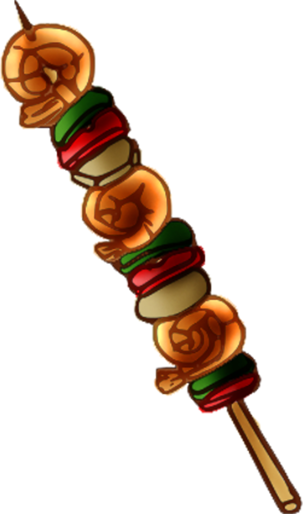

Sweets!
Yellow cake has me absolutely howling in my dreams. One time, I stole a whole cake with bacon frosting, delicious!
Meats!
If life was a box of kabobs, my life would be filled with loose sticks.
Perfection!

I find these bits of fancy around the house sometimes, usually on a lap. Too slow, way too slow, human.